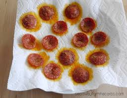

Cooked Pepperoni

Description
Something I've been having since I was a young child, while maybe not the most healthy thing in the world it sure is delicious!
It's simple to make, all you need is a microwave, plate, and paper towel. Oh! And of course some pepperoni!
Ingredients
- Bag of Pepperoni(Either 5oz or 8oz)
Steps
- Take plate and line it with several layers of paper towel.
- Place pepperoni onto the plate. Spread it out so it is not in one big clump. If you'd like it crispier try to make it a single layer of pepperoni pieces.
- Depending on the size of bag you have, I find the 5oz. cooks well at 3 minutes. For the 8 oz. 4 minutes should be good. All microwaves vary though, so this will take some fine tuning to get it excatly how you want it.
Home